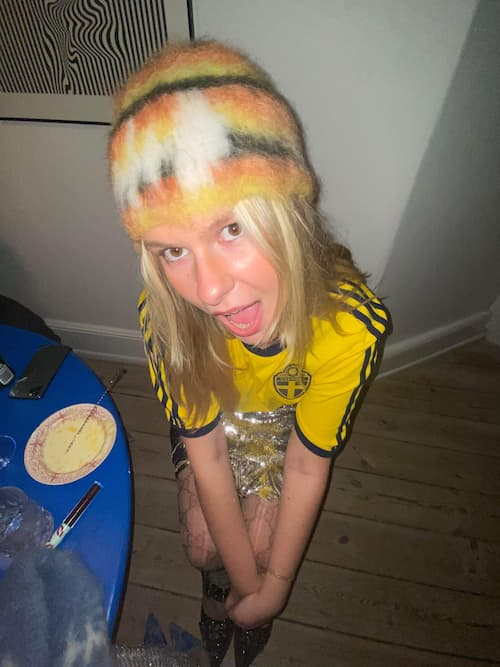
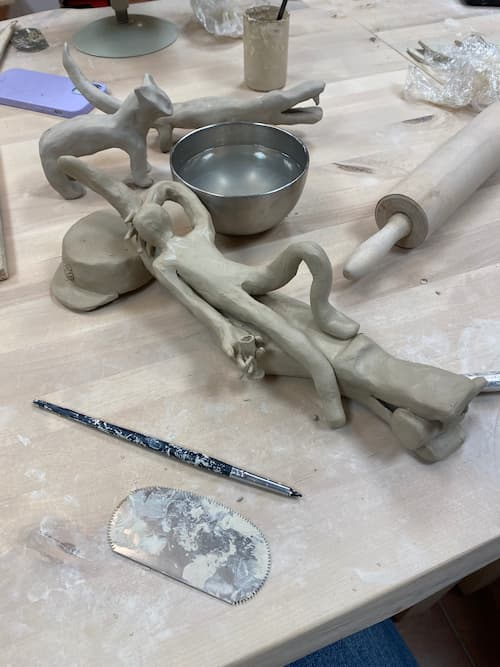

Isa Cornelia Cecilia Nordbeck


Kontaktoplysninger
- Navn: Isa Cornelia Cecilia Nordbeck
-
Adresse: Tordenskjoldsgade 23, 4t.h 1055 København K
- Telefon: +46 73 372 96 48
-
Email:
isno0002@stud.ek.dk
Lidt om Isa
Isa er 25 år og bor sammen med sin kæreste i Indre. Hun har en passion for
kreativitet, som kommer til udtryk i både hendes arbejdsliv, studier og i
fritiden. Isa er ikke særligt god til dansk, så hvis du finder fejl i
teksten, er det derfor.
Sociale medier
Sjove ting om Isa
-
Elsker gullashsuppe og spiste det cirka tre gange om ugen i løbet af
sommeren.
- Købte en sejlbåd uden at kunne sejle.
- Elsker alt, der er i miniatur.